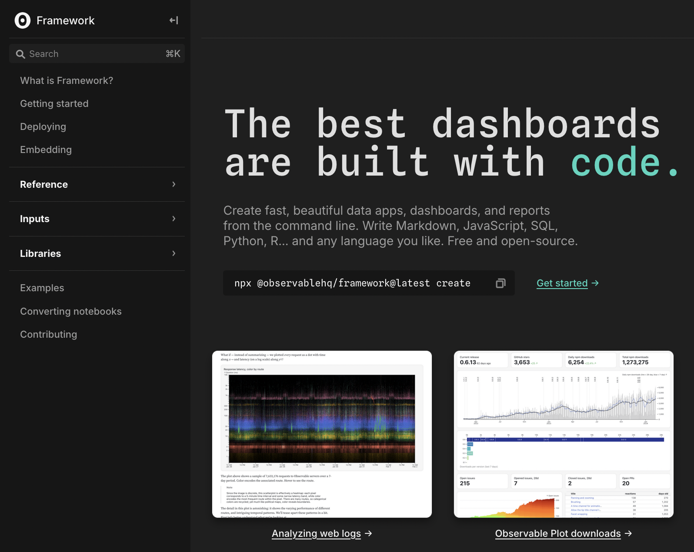
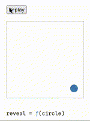
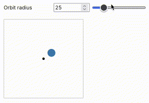
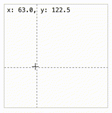

Week 7 Lab: Local Observable Frameworks, D3 Interactions
CS-GY 6313 - Information Visualization
New York University
2025-10-17
Week 7 Lab Overview
| User Interface | Graphics Library | Notebook(s) |
|---|---|---|
| observablehq.com | D3 Framework |
Local Observable Frameworks Week 7 Lab Notebook |
Today’s Lab Activities
Today we will be a exploring the following topics:
- How to set up a local instance of Observable via Framework
- Main Lab Activities:
- Examples: Observable & Interactions
- Concept: Persistent Variables in JavaScript
- Review: Observable Inputs Library
- Application #1: Changing Visible Data
- Application #2: Mouse Tooltips
Reminders & Checks
- Project Group Check-in - Due by TONIGHT @ 11:59pm
- Lab Feedback Form - Due Anytime (optional)
Running Observable Locally: “Framework”
In prep for your group projects, it would be ideal to work on your own local instances of Observable…ness. The same group behind Observable also has released Framework, a JavaScript ecosystem for generating dashboards and web apps with Observable functionality.
We will focus a bit on making sure you are ready with a Framework project that you can upload to Github. Make sure to open the first notebook, Local Observable Frameworks, and follow the instructions.
[Note]: Framework is one of many options you can use for your project. We’re introducing it because it’s the closest to the Observable notebooks we’ve generated thus far.

Framework Prerequisites
Our guide assumes that you have a Github account.
If you do not, please make an account.
Installing Node.js and npm/pnpm: Mac OSX
Open a shell (in VS Code or open Terminal.app).
Paste and run the command, which downloads and installs
pnpm:(or follow any other directions on the install page).
Paste and run the command. This will install the latest long-term support version of Node.js:
Installing Node.js and npm/pnpm: Windows
Open PowerShell as an administrator. If it produces an error, you can try alternative techniques from pnpm’s installation page.
Paste and run the command, which downloads and installs pnpm:
Open a new shell (in VS Code, for example) and paste + run the command. This will install the latest long-term support version of Node.js:
Creating a Framework Project
Open a terminal window (either Terminal.app on MacOS, Command Prompt on Windows, or VS Code on either MacOS or Windows).
Navigate to any folder or location where you will be comfortable creating a new folder (e.g. the
Documents/directory on MacOS or theDesktop/on Windows). You can navigate to that location using the following command:Paste and run the command:
New instructions will be prompted from you in the terminal window. Answer all the directions that appear. The defaults are fine, but when the instructions ask to “Install dependencies” you must pick “No”.
At this point, Framework will create a brand new folder for you with all the code necessary to run a Framework project locally. If you ran with defaults, then the new folder will be titled “hello-framework”.
Installing Dependencies, Running a Dev Server
Installing Dependencies
Navigate into your new folder by using the cd command. Once inside, install dependencies by running the following command:
Running a Development Server
Once you’ve installed your dependencies, we are ready to run a local server that we can use for development. Run the following command inside your project folder:
Your Framework webpage should then be loaded into a localhost server that you can view via the browser. The Framework architecture tracks any changes to any files and updates in real-time every time you save changes in a file.
Version Control via Github
After these steps, you should be able to push changes to your Github repository and pull them when needed.
Online, create an empty Github repository and feel free to name it anything you want (though generally you should try to match project names when possible).
Locally (via command line or via Github tool), add and commit all files in your project window.
Set the branch to “main”, add a new remote origin, and push your changes. The 3 commands to do so are provided below, as an example:
[Note]: Whenever you clone your repo to another folder or device, you must install dependencies again.
Framework Setup: Command Line Summary
# Step 1: Install pnpm, for MacOS or Windows
curl -fsSL https://get.pnpm.io/install.sh | sh -
Invoke-WebRequest https://get.pnpm.io/install.ps1 -UseBasicParsing | Invoke-Expression
# Step 2: Install _Node.js_
pnpm env use --global lts
# Step 3: Create a _Framework_ Project
pnpm dlx @observablehq/framework@latest create
# Step 4: Install Dependencies, run a dev server
pnpm i
pnpm dev
# Step 5: Connecting an Empty Github Repo
git add -A
git commit -m "first commit"
git branch -M main
git remote add origin git@github.com:<USERNAME>/<PROJECT_NAME>.git
git push -u origin mainHow Framework Works
General Operations:
- Framework generates webpages from Markdown files.
- Markdown files can mix and combine Markdown syntax, HTML, and JavaScript.
- Helper functions can be written in separate scripts and imported into Markdown files.
- NPM and Observable modules can be imported.
Best Practices
- Try to keep most dev files (major scripts, datasets, etc.) inside of the
src/folder. - Avoid dashboard rot by knowing beforehand what to create (i.e. a script, a database, a notebook) and keeping efficient/accessible/interactive design practices in mind.
Let’s Run a Live Demo!
Lab: Interactables
We have a second notebook for today’s lab, which further elaborates on some interactable elements.



General Structure for Interactables
- A way to manipulate the data (e.g. a button, a mouse event).
- Functions to handle changes (e.g. an event handler function).
- A connection between (1) and (2).
General Structure for Interactables
- A way to manipulate the data (e.g. a button, a mouse event).
- Functions to handle changes (e.g. an event handler function).
- A connection between (1) and (2).
// Daisy-change of events to this circle
reveal = circle => {
circle
.interrupt() // 1. Stop previous animation
.attr("cx", 25) // 2. Place at origin (25,25)
.attr("cy", 25)
.transition() // 3. Start a transition
.duration(1500) // 4. Run for 1.5sec
.attr("cx", 175) // 5. Set new pos (175,175)
.attr("cy", 175);
}General Structure for Interactables
- A way to manipulate the data (e.g. a button, a mouse event).
- Functions to handle changes (e.g. an event handler function).
- A connection between (1) and (2).
// Create two PERSISTENT variables that will be used across multiple functions within this code block.
let angle = 0; // Relative to +x
const speed = 0.02; // degrees per frame
// Event Handler that runs every frame. Animates the cirlce
function animate() {
// Update angle since it's a new frame
angle += speed;
// We grab the value set by our slider variable at this current frame
const r = viewof radius.value;
// Modify the x and y positions of our orbiting circle, mathematically
const x = pivot.x + r * Math.cos(angle);
const y = pivot.y + r * Math.sin(angle);
orbit.attr("cx", x).attr("cy", y);
// This is a special DOM function that calls `animate()` again when the next frame
// of the window is updated. So `animate()` will run at every frame.
requestAnimationFrame(animate);
}
// Call `animate()` to get things rolling when this code block runs
animate();General Structure for Interactables
- A way to manipulate the data (e.g. a button, a mouse event).
- Functions to handle changes (e.g. an event handler function).
- A connection between (1) and (2).
// Mouse event handlers
const onmousemove = (event) => {
const [x, y] = d3.pointer(event); // Grab the mouse position
vLine // Modify the position of our vertical line
.attr("x1", x)
.attr("x2", x)
.style("visibility", "visible"); // And make it visbile
hLine // Same with the horiontal line.
.attr("y1", y)
.attr("y2", y)
.style("visibility", "visible");
text.text(`x: ${x.toFixed(1)}, y: ${y.toFixed(1)}`); // We modify the coordinates text.
};
const onmouseleave = (event) => {
vLine.style("visibility", "hidden"); // Make the vertical and horizontal lines invisible
hLine.style("visibility", "hidden");
text.text(""); // We make the text empty.
};
// Connect events to handlers.
svg.on("mousemove", onmousemove);
svg.on("mouseleave", onmouseleave);Persistence in JavaScript
Persistent variables are those that are maintained and are referenced across multiple components, functions, etc. In JavaScript, variables remain persistent within the context they are defined.
Example #2:
Example #3:
// We must generate our crosshair lines pre-emptively as elements of our svg.
// We create the vertical line, with some styling
const vLine = svg.append("line")
// ...
// We create a horizontal line, with some styling
const hLine = svg.append("line")
// ...
// Similar to the crosshair lines, we also pre-generate a text display showing the mouse coordinates.
const text = svg.append("text")
// ...Review: Basic Input Types
- Button - do something when a button is clicked
- Toggle - toggle between two values (on or off)
- Checkbox - choose any from a set
- Radio - choose one from a set
- Range or Number - choose a number in a range (slider)
- Select - choose one or any from a set (drop-down menu)
- Text - enter freeform single-line text
- Textarea - enter freeform multi-line text
- Date or Datetime - choose a date
- Color - choose a color
- File - choose a local file
Try For Yourselves
Our lab notebook has two application examples as exercises. Try them for yourselves!
Final Reminders & Checks
- Project Group Check-in - Due by TONIGHT @ 11:59pm
- Lab Feedback Form - Due Anytime (optional)